“Everest Timeline” Documentation by “AccessPress Themes” v1.0.0
“Everest Timeline”
Created: 8/9/2017
By: AccessPress Themes
Email: support@accesspressthemes.com
Thank you for purchasing our plugin. If you have any questions that are beyond the scope of this help file, please feel free to email via our user page contact form here. Thanks so much!
Table of Contents
- Installing Instructions
- Everest Timeline Listing Page
- Creating New Timeline
- Post Feeds Settings
- Wordpress Post
- Facebook Settings
- Twitter Settings
- Other Settings
- Shortcode Usage
- Media Types
A) Installing Instructions - top
- Unzip everest-timeline.zip
- Upload all the files to the /wp-content/plugins/everest-timeline
- Activate the plugin through the 'Everest Timeline' menu in WordPress.
- For customizing the plugin's settings, click on Everest Timeline menu in Wordpress left admin menu.
- To display the Everest Timeline in the frontend, please use automatically generated shortcode from Everest Timeline Usage metabox.
Once the plugin is installed and activated you will find a menu named "Everest Timeline" in the left menu bar of the admin menu.Once you click on that menu , you will go to the plugin's listing page and you will also see the add new button, once you click on that button you will go to the Everest Timeline page where you can create timeline showcase.
B) Everest Timeline Listing Page - top
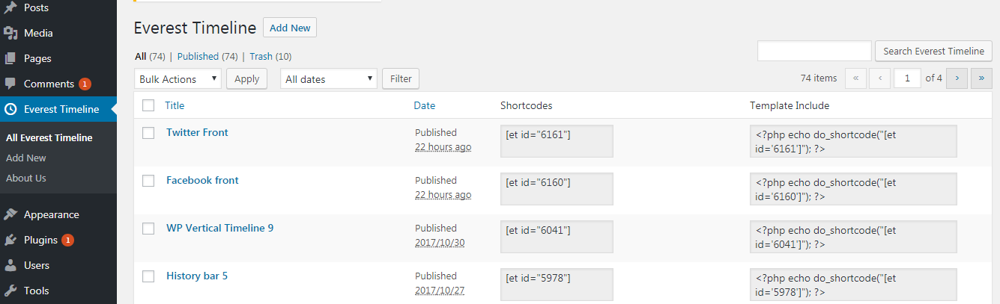
This is the landing page for plugin. Here you can see the listing of the timeline created. Here you can see Add new button at top of Everest Timeline listing table.For creating a new Everest Timeline, you will simply need to click on the Add New submenu of the Everest Timeline menu or click on the Add new button in the Everest Timeline’s listing table. You can add, edit or delete Everest Timeline from here.Once you click the button, you will be redirected to the new blog builder page where you can add the unlimited numbers of timeline's posts.
C) Everest Timeline builder Page - top
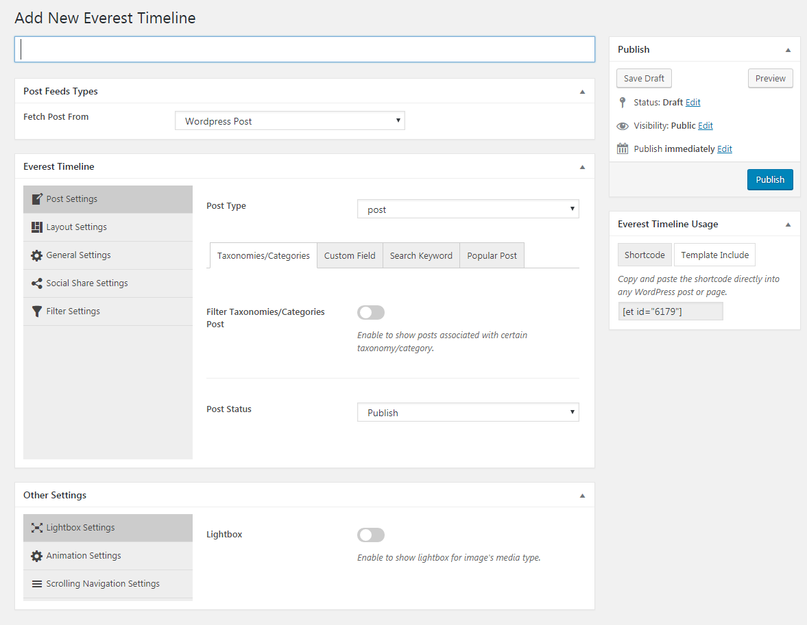
From this builder page you can add timeline's posts from wp taxonomies,categories,terms,custom meta data,popular post,facebook,twitter and create your timeline by managing the required settings for the timeline.Below are the detail description for Everest Timeline settings.
D)Post Feeds Settings- top
The post feeds settings are used to fetch post from either WP Post or facebook or twitter. To fetch posts from wordpress post follow the following description details.
Post Settings- top
The Post Settings is used to filter the post through categories,terms,custom field,search keyword and many more. This tab include the taxonomies/categories,custom field,search keyword,popular post tab which are described below in brief:
Taxonomies/Categories
The Taxonomies tabs are used to filter the post from taxonomies/categories terms which can be either single term or multiple terms. It include the following fields:- Filter Taxonomies/Categories Post: Enable to show the post associated with certain categories or taxonomies.
-
Taxonomy/Category Type:It is of two type: Single Taxonomy Query and Multiple Taxonomy Query.
Choose Simple Taxonomy/Category Query to display post from a single taxonomy or category with single term.For example display posts tagged with bob, under people custom taxonomy.
Choose Multiple Taxonomy/Category Handling to display posts from several custom taxonomies or categories.
-
Simple Taxonomy/Category Query:
- Taxonomy/Category: In this option you can select the needed category or taxonomy.Please note to select this option please select the post type first.
- Terms: This option is used to select the terms of the above category.
-
Multiple Taxonomy/Category Handling:
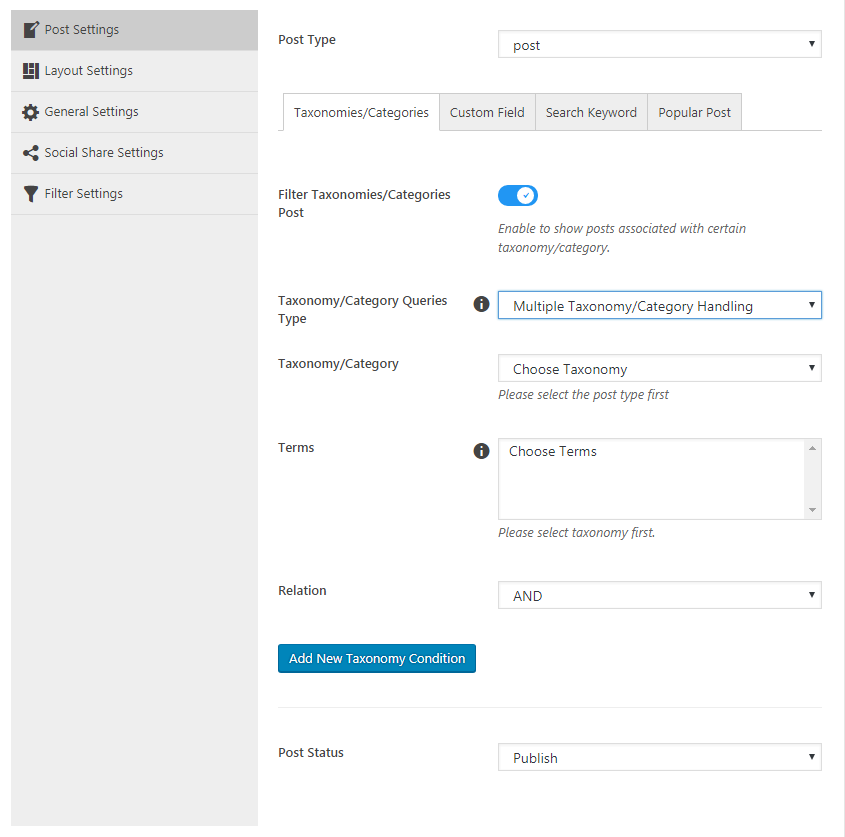
- Taxonomy/Category: In this option you can select the needed category or taxonomy.Please note to select this option please select the post type first.
- Terms: This option is used to select the terms of the above category.
- Relation:The logical relationship between each inner taxonomy when there is more than one. Possible values are 'AND', 'OR'.
-
Add New Taxonomy condition button:This button is used to add the multiple taxonomy condition.After clicking on this button.New condition block will be added as shown in below screenshots:
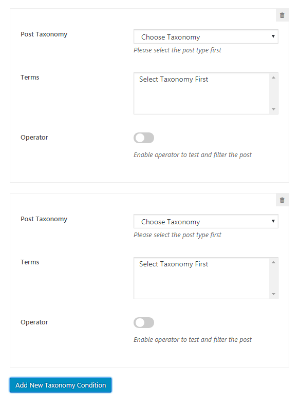
The Post taxonomy and trems have same functioning as above.And Operator are used to test and filter the post. Possible values are 'IN', 'NOT IN', 'AND', 'EXISTS' and 'NOT EXISTS'
-
Simple Taxonomy/Category Query:
Custom Fields:
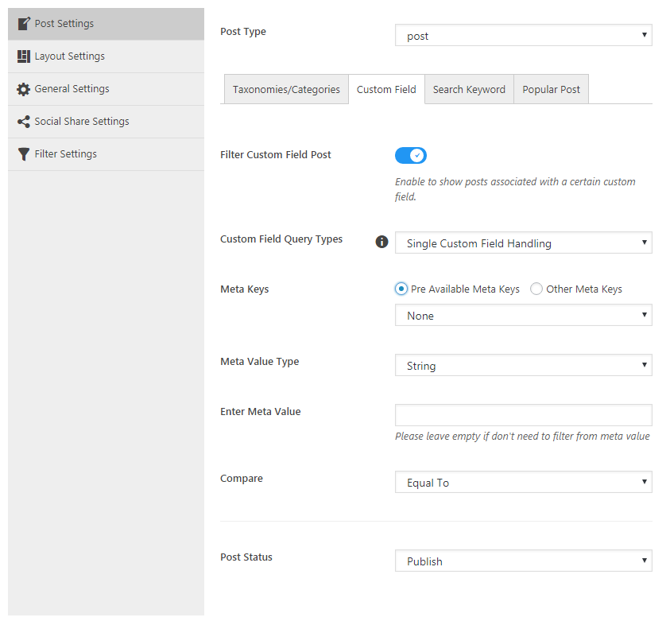If you want to show post associated with certain custom fields then enable this option. After enabling the following field will appear where you can choose the condition for custom field which are described as follow:
-
Custom Field Query Types: This option is of two types:Single Custom Field Handling,Multiple Custom Field Handling.
-
Single Custom Field Handling: Display post where the meta key is 'price' and the meta value that is LESS THAN OR EQUAL TO 22
This option include the following option:
- Meta Keys:Meta keys are Custom field key. Here you can select the already existing meta keys or you can give your own meta keys.To filter from the existing meta keys please select Pre avaliable meta keys and to filter from other meta keys please select other meta keys option.
- Meta Value Type:The meta value type is of two type Number or string.If you want to filter the post from custom meta value through number then use Number and add the required meta value number.If you want to filter through string custom field value then select the string option and then put the string meta value in Enter meta value text.
- Compare:This is used to compare the meta value.This is the Operator to test the 'meta_value'. Possible values are '=', '!=', '>', '>=', '<', '<=', 'LIKE', 'NOT LIKE', 'IN', 'NOT IN', 'BETWEEN', 'NOT BETWEEN', 'NOT EXISTS'.
-
Multiple Custom Field Handling: Display posts that have meta key 'color' NOT LIKE value 'blue' OR meta key 'price' with values BETWEEN 20 and 100
The Meta keys,Meta Value and Compare fields has same functioning as above which is already described above.
The other fields are described as follow:
- Relation:This is used to show the relationship between each inner meta query when there is more than one. Possible values are 'AND', 'OR'.
-
Add New Meta Condition Button:This is used to add the multiple meta condition.By clicking on this button the meta condition fields will be added as shown in below screenshots.
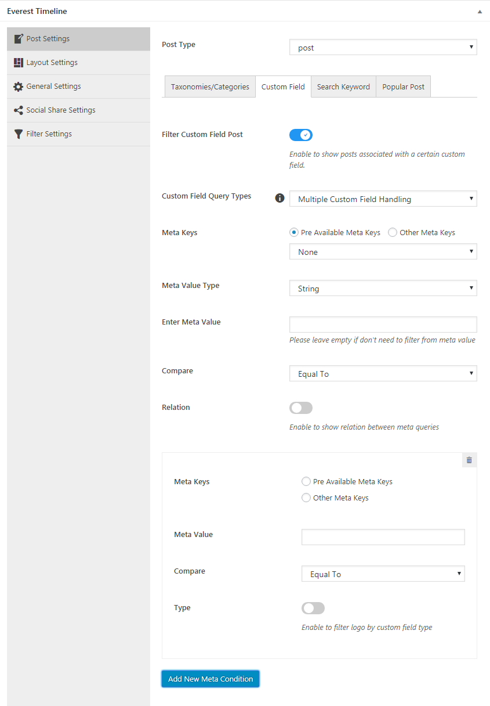
- The Meta keys,Meta Value and Compare fields has same functioning as above which is already described above.
- Type: The type is Custom field type. If you want to filter the post from custom field type then enable this option.Possible values are 'NUMERIC', 'BINARY', 'CHAR', 'DATE', 'DATETIME', 'DECIMAL', 'SIGNED', 'TIME', 'UNSIGNED'.
-
Single Custom Field Handling: Display post where the meta key is 'price' and the meta value that is LESS THAN OR EQUAL TO 22
This option include the following option:
Search Keyword:
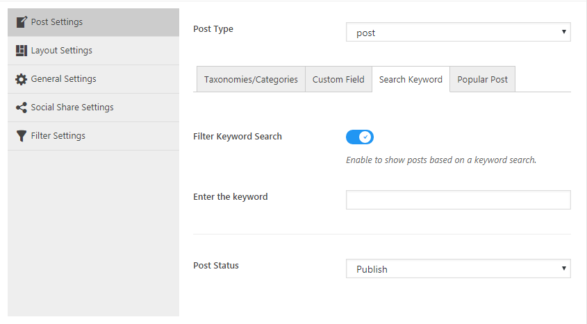Enable the filter keyword search to show posts based on a keyword search.
- Enter keyword:Here enter the keyword to search the post that is related to the keyword for example if the keyword is Hello then it will display posts that match the search term "Hello":
Popular Post:
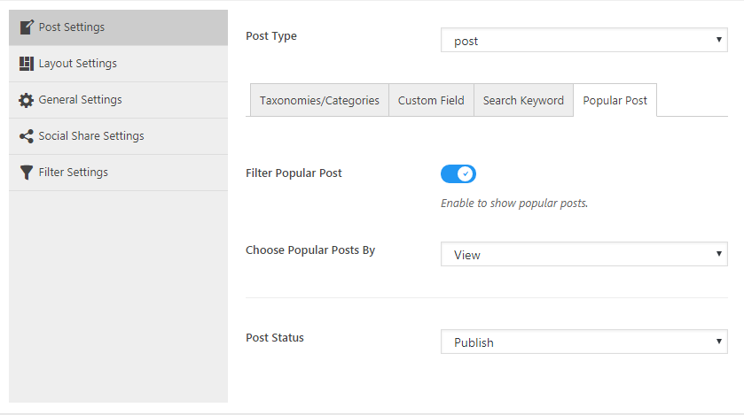This is used to show the popular post.
- Filter Popular Post: If you want to show the popular post then enable this option.
- Choose popular post by: This is used to filter popular post by either view or comment count.
The following are the field that are also avaliable in post settings.
- Post Status: This is used to retrieves posts by Post Status.
E) Layout Settings- top
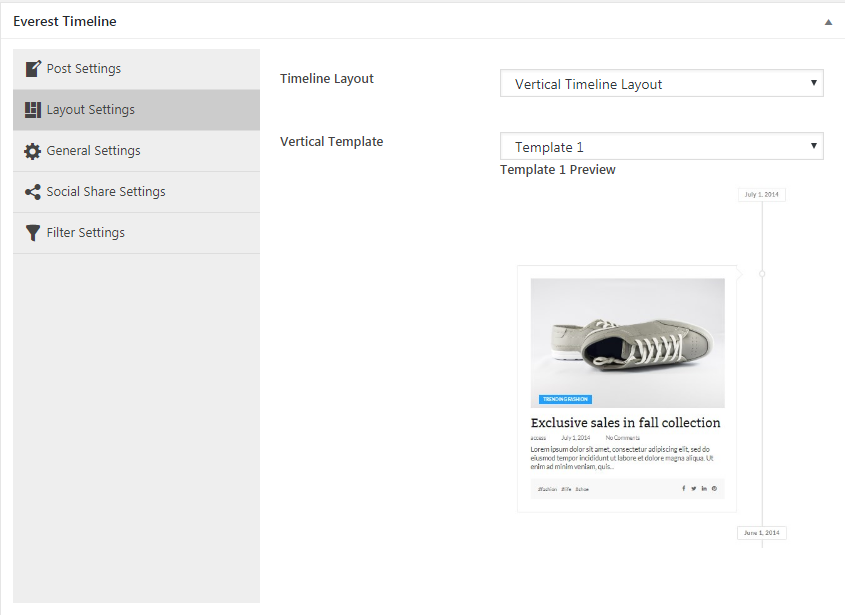 This layout settings are used to configure the layout types for timeline's post. There are three types of layout which are described as follow with it's respectives settings:Vertical Timeline:
If you have selected the Vertical Timeline layout then the following field can be configured:- Vertical Template:There are 18 templates to choose from.
Horizontal Timeline Layout:
If you have selected the Horizontal Timeline Layout then the following field can be configured:
- Horizontal Template: There are 21 templates to choose from.
One Side Timeline Layout:
If you have selected the Horizontal One Side Timeline Layout then the following field can be configured:
- Horizontal Template: There are 5 templates to choose from.
F) General Settings- top
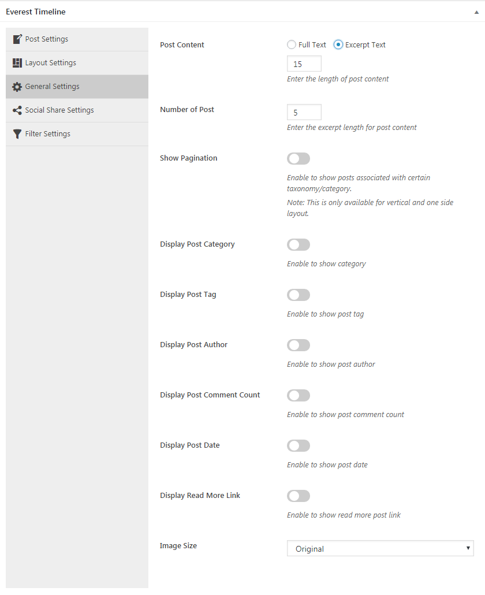The General Settings is used for basic settings of timeline layout which include following fields:
-
Post Content:
This is used to select the length of post content to show in template.
It is of two type:
- Full Text: If you will select this then full content of post will be taken.
- Excerpt Text: If you will select this then a excerpt length field will appear where you can enter the number of text to show in template.
- Number of post: This is used to show the number of post in frontend.
- Show Pagination: This is used to show pagination.If you will check this then pagination field will appear.
-
Pagination:This is used to select the types of pagination.It is of three types: Standard Pagination,Load More Button,Infinite Scroll Pagination.
Standard Pagination and load more button has there own templates to choose.If you will select load more button then following field will appear:
- Load More Template: This is used to select the required template for load more.
- Load More Text: This is used for the text which appear in load more button.
- Loader: This is used to show loader image before the other page images load.
-
Pagination:This is used to select the types of pagination.It is of three types: Standard Pagination,Load More Button,Infinite Scroll Pagination.
Standard Pagination and load more button has there own templates to choose.If you will select load more button then following field will appear:
- Display Post Category: Enable this to display category name in templates.
- Display Post Tag: Enable this to show post tags name in templates.
- Display Post Author: Enable this to show post author name in templates.
- Display Post Comment Count: Enable this to show count of comments in templates.
- Display Post Date: Enable this to show date of published post in templates.
If you will enable it then Date Format field will appear.
- Date Format: This is used to select the format of date to display in the innner part of the templates.
-
Display Read More Link: This is used to display read more button in frontend.If you will enable it then following field will appear:
- Read More Text:This is used to enter the text for button link.
- Post Link: This is used to select the post link which can be either post link or custom link.If you want to give custom link then put the custom link in custom link URL field.
- Image Size: This is used to select the image size for the templates.Please note this will only work for post images media type.
G) Social Share Settings- top
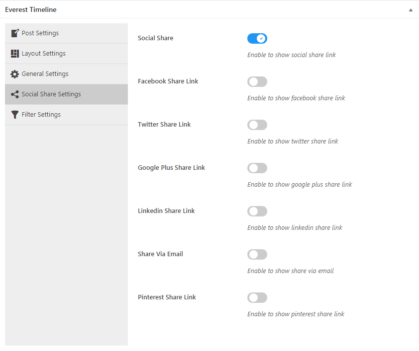This is used to show the share link for the post.You can enable the facebook,twitter,google plus,linkedin,Email,pinterest share link to share the post respectively.
H) Filter Settings- top
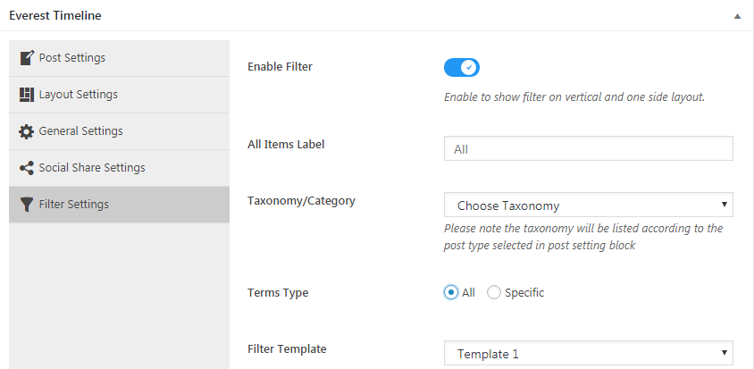To show filter effect please enable the Enable filter field.Then the following field will appear:
- All Items Label:This is used for all text label in filter.
- Taxonomies/Categories: This is used to select the filter from category/taxonomy.Please note the taxonomy will be listed according to the post type selected in post setting block.
- Terms Type:This is of two type All and Specific.Select all if you want to show filter from all terms of above selected category.Select specific to show filter from specific terms which can be choosen.
- Filter Template: This is used to select the templates for filter.
I) Twitter Settings- top
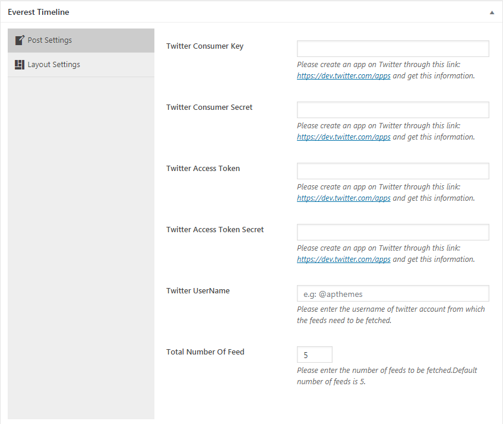In post feed type metabox if you will select the twitter feed types in fetch post from field then following field will appear
- Twitter Consumer Key: Please create an app on Twitter through this link: https://dev.twitter.com/apps and get this information.
- Twitter Consumer Secret: Please create an app on Twitter through this link: https://dev.twitter.com/apps and get this information.
- Twitter Access Token: Please create an app on Twitter through this link: https://dev.twitter.com/apps and get this information.
- Twitter Access Token Secret: Please create an app on Twitter through this link: https://dev.twitter.com/apps and get this information.
- Twitter UserName: Please enter the username of twitter account from which the feeds need to be fetched.
- Total Number Of Feed: Please enter the number of feeds to be fetched.Default number of feeds is 5.
J) Facebook Settings- top

In post feed type metabox if you will select the facebook feed types in fetch post from field then following field will appear
- Facebook Page Access Token: Generate access token of facebook page through below link https://developers.facebook.com/tools/accesstoken/ .
- Facebook Page Name: Enter facebook page name whose post need to be fetched.
- Facebook Page ID: Enter facebook page id whose post need to be fetched.Copy and paste the page link in below link and get your page id. https://findmyfbid.com/
- Number Of Feeds: Please enter the number of feeds to be fetched.Default number of feeds is 5.
- Like Count: Enable this to show like count.
- Comment Count: Enable this to show comment count.
- Share Count: Enable this to show share count.
- Read More: Enable this to show read more link.
K) Other Settings- top
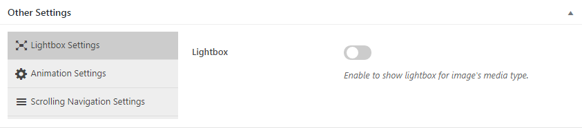The other settings metabox have following settings to configure:
- Lightbox settings: Enable or disable to show the lightbox in images.
- Animation Settings:Enable or disable the animation to show animation effect on frontends.Thirteen different animation are avaliable.
- Scrolling Navigation Settings:Enable or disable the scrolling navigation to show navigation bar of date in frontend.
L) Shortcode Usage- top
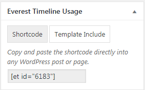In Everest Timeline Usage metabox you can get the shortcode for page and theme which you can copy & paste the shortcode directly into any WordPress post or page or theme.
M) Media Types- top
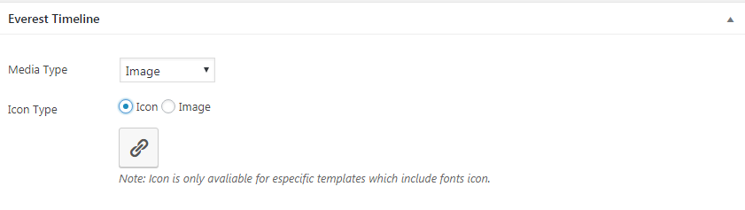The Media Types settings will be find at the end of every post or page.Just add a new post/page or open the pages/post and then you will find the Everest Timeline meta box here Media types can be managed. The media type field include the following option which is described in brief:
-
Image: This is used to show the image in frontend.

-
Slider: This is used to show slider image gallery for post.You can upload the images through Upload Images button.And After uploading the images you can drag and drop the image position and you can also delete the unneccessary image.

-
Video: This is used to show the video in the post.It is of three types.You can choose youtube,vimeo or upload your own video and can enter the url of the video in the field for youtube /vimeo and for upload your own you can upload your video.

-
SoundCloud: This is used to show the audio effect of soundcloud in frontend.Please enter the client id and url of audio.

N) Icon Types- top
The Icon Types settings will be find at the end of every post or page.Just add a new post/page or open the pages/post and then you will find the Everest Timeline meta box here Icon Types can be managed. The Icon Types is of two types icon and image.You can choose icon or upload images to show in timeline. The icon is only avaliable for certain templates.
AccessPress Themes